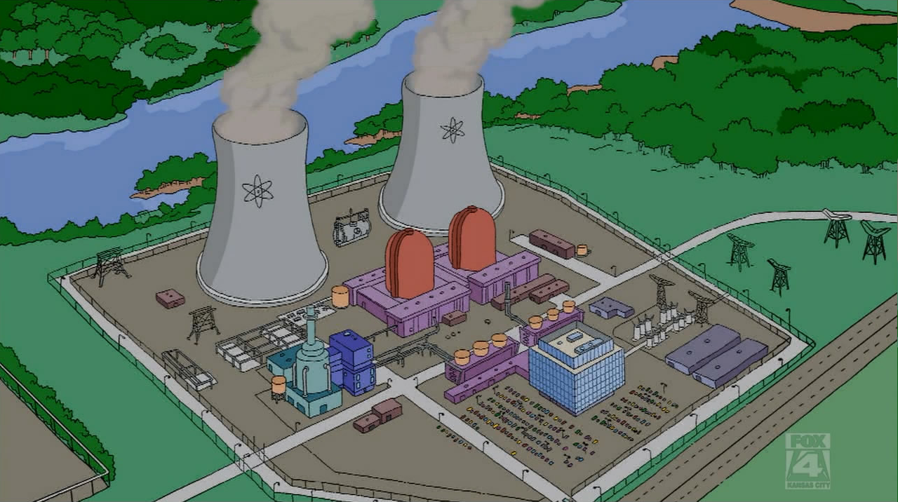
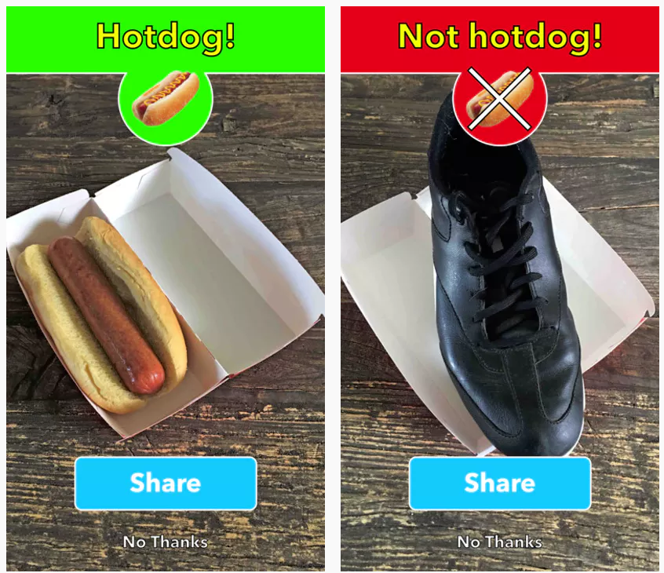
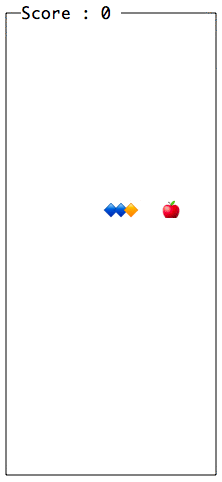
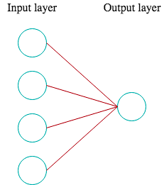
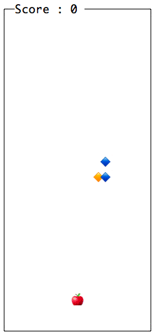
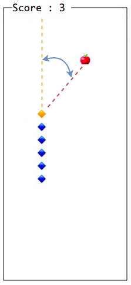
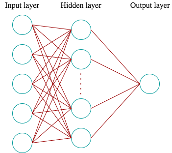
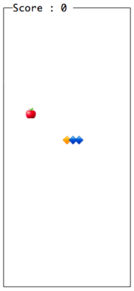

Lets Talk about...
Machine Learning
Who am I to talk about ML
What I'm going to talk about
- What is machine learning
- Why is it a thing now
- Small example
What is wrong with old algorithms?
What was done with old algorithm?
Nuclear power plant systems
Spaceship systems
Other amazing stuff
What was done with ML algorithms?
Of course that's not all!
Self-driving cars
Medical Diagnosis
Image Recognition
How is it possible?
How does normal algorithms work?
- Input Data
- Some rules written by humans
- Output
How does ML algorithms work?
- Input Data
- Some rules computed from training data
- Output
Why is it a thing now?
Four factors that hold back AI:
- Compute speed
- Data (in nice form)
- Algorithms
- Infrastructure
Example
We gonna make this snake smart
Surviving
Simple neural network
What we have
Let’s feed the snake
New feature - angle to an apple
New neural network
Snake is great again!
Thats it
Whats next?
Questions?